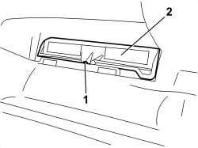
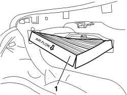
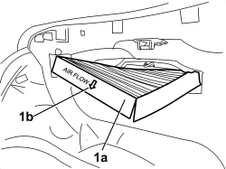

5010B09 PURIFYING (POLLEN) FILTER FILTER ELEMENT - REPLACE
- Path
- Procedures > 50 AUXILIARY UNITS > 5010 CLIMATE CONTROL - MISCELLANEOUS > 5010B CLIMATE CONTROL AIR PIPES AND DUCTS > 5010B09 PURIFYING (POLLEN) FILTER FILTER ELEMENT - REPLACE
- Kind
- repair procedure (removal / refitting; the operation number is the code)
- Applies to
- all engines; all production periods
- Interactive page
- https://sloeber94.github.io/elrnDB/alfa/159/en/#/939010885
Applies to: all engines; all production periods
 Removing
Removing
 Refitting
Refitting- Open the glove compartment.
1. Undo the bolt.
2. Remove the panel (2a) releasing the retaining clip (2b), then the rigid retainers (2c).

Applies to: all engines; all production periods
1. Undo the bolt.
2. Lift up the filter cover.

Applies to: all engines; all production periods
1. Extract the filter element.

Applies to: all engines; all production periods
Refitting
Removing- Check that the filter element is not damaged or blocked.
1. Insert the filter element (1a).

Applies to: all engines; all production periods
- Close the filter cover and tighten the bolt.
- Position the panel and attach the retainers, then tighten the bolt.
- Close the glove compartment.
Topics that link to this page (10)
- L003 CLIMATE CONTROL AIR FLOW IRREGULAR
- S051 CLIMATE CONTROL SYSTEM NOISY / (IN PASSENGER COMPARTMENT)
- U10 UNPLEASANT CLIMATE CONTROL ODOURS
- 0010K30 30,000KM SERVICE
- 0010K60 60,000KM SERVICE
- 0010K90 90,000KM SERVICE
- 0010M20 120,000KM SERVICE
- 0010M50 150,000KM SERVICE
- 0010M80 180,000KM SERVICE
- 5040C16 AIR CONDITIONER HEATER/DISTRIBUTION UNIT HOUSING - DISMANTLE AT BENCH